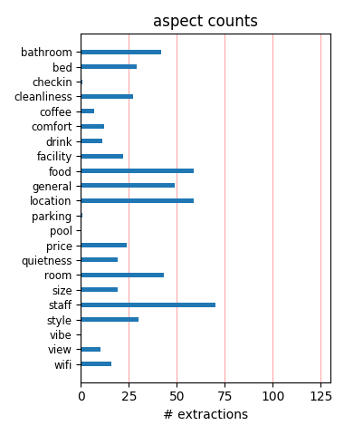
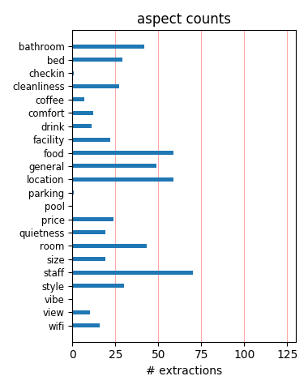

This is a great location to stay. The hotel was inexpensive but the service was good and the room was fine. The decor is a bit odd, and there is some traffic noise, but it was made up for by free access to the local gym.
Good rooms, trendy decor. Really friendly knowledgeable staff and not over priced. All this and only a 10 dollar cab ride to the CBD. Great choice if like me you need a handy hotel to spend a couple of days whilst seeing to business in Sydney.
This place is expensive for unfriendly service you receive. Breakfast is at one of two cafes close by and these were awful! Staff are rude, broken glass on the patio ground outside, quilt dirty and only sheets, no Doona cover. I won't stay here again.
The hotel is OK. The shower area is small. The staff is friendly. This was my first time in Sydney, and is the first time I felt dissapointed with a Trip Advisor top ten rated Hotel. If this is the 5th Hotel in Sydney, probably I'll not return to the city...
My sis and I stayed at the Diamant for 4 days. The rooms are spotlessly clean, beds comfortable, nice toiletries and great water pressure. Off site breakfast is also a treat - I recommend the omelettes. Free wifi for 1 hour in the lobby, no business suite available.
We stayed for one night - and got a room that was on a lower level facing south and it was hard to sleep for traffic noise and partying. Otherwise the rooms are new and very nice. I would have liked a bath, maybe the other rooms have one. Make sure you book parking in advance.
We've stayed twice at the Diamont for two & four days respectively. The rooms are great with a big tv, comfy bed and are quiet considering the location of the hotel. The staff are friendly and accommodating had some post dispatched to the hotel prior to our arrival. Highly recommended.
Brilliant hotel, clean comfortable rooms with good facilities. Close to all the amenities that one requires, and a three minute walk to Kings Cross station. I had no problem with the location in terms of safety. Most comfortable bed ever and friendly staff. Would definitely stay here again.
I stayed here as a tourist. The hotel is not in the exact middle of the city, but a location that is near public transportation and within walking distance of some tourist sites. The staff was VERY helpful with suggestions about where to go and how to get there. Rooms were clean and well-maintained.
The staff of the Diamant Hotel was very friendly, professionel en helpfull,the rooms were well equiped,and clean , also very good beds, and shower The location very good, almost in de middle of he city. We were very content during our stay in the hotel en intend to come back next time when we are in Sidney
This hotel is situated at the top of William Street and Kings Cross in the throbbing heart of Sydney's entertainment and nightlife area. Also 3 minutes from the Hop-on Hop-Off bus and the Metro, which is very convenient. Quality/price is good and the rooms are clean and nice. A good place to stay when you are visiting Sydney!
I would highly recommend anyone to stay at the Diamant. Great staff and location. My only critism is that parking can be a little tricky, with only a limited number of spots available at the hotel, you can park at the nearby Kings Cross parking station but it is about a 10 minute walk, and in the rain with a suitcase, it is not fun!!
We had a fantastic stay at the Diamant Hotel. Our room was modern and comfortable. We very much enjoyed it and the employees at the hotel were very friendly and helpful! The location was perfect for visiting Sydney and we would recommend it to all travellers. The ambiente at the hotel was cool, stylish and the price we payed was fair.
Inwould go out of my way to stay here again. In fact I would not stay anywhere else in Sydney. An immaculate comfortable hotel with friendly and helpful staff and a great bed! The location was perfect near all public transport for the beach and major attractions. I would not call this a 'budget' hotel: I would call it absolutely perfect.
This is a nice hotel in a good location (railway nearby, 25-30 minutes walk to main attractions). I only missed a lamp on the table (I really would have troubles with the light if I would have had to work in the evening) and it would be a good idea to clean at least sometimes behind the TV screens. Can be recommended for a stay in Sydney.
Loved this little boutique hotel, very clean and comfortable and extremely friendly staff. Rooms were decent size, only downside was no tea and coffee in room and beds quite hard. Also no restaurant in hotel, so no breakfast available, this was across the road. Good location, although on the top of a steep hill. Great place to stay though.
We checked in pretty late and had to check out pretty early as we had an early flight, but the time that we had at the hotel was great. The room was nice and clean and there was a great view looking out onto the street and city. We were given complementary gifts and had no problems at all. The staff were friendly and a good time was had by all.
We didn't like the hotel, especially because we experienced problems with our booking which we found weren't handled properly. The rooms were OK but small. The location was good and convenient for walking into the city. We have now stayed in two different hotels of the group and won't come back on our next trip to Sydney. They ask too much money for what you actually get.
We booked this place to get away for the weekend and enjoy the nightlife of Kings Cross. Our stay however, turned into a nightmare while we had to endure noise all day long from the construction sites next door. The incessant sounds of jackhammers, machinery, excavation and drills drove us crazy. We could not go out to come back and listen to it with a hangover, aaahhhhhhhhhhhhhhhhh.
After reading the reviews I decided to stay at the Diamant...the Hotel was ok but nothing special...my room was definately in need of an updating....from the broken toilet seat to the ripped lamp shade and stained chair pillows. They staff was friendly and very helpful and the location was good..next to kings cross station and within walking distance to many restaurants and great nightlife.
The Diamant has seen better days. The room was shabby, the walls scuffed, some of the finishes were bubbling and the bedhead was covered in dirty handprints. The towels were the meanest, thinnest towels I have ever encountered in a hotel. On the upside, the bed was very comfortable and the bathroom above average. The location is also excellent and, despite the location the room was very quiet.
This is a great little find! Good value and good room sizes with bit of style as well. For boutique market (and prices) this is very solid option. Didnt spend a lot of time at the hotel but when i did it was relaxing in the room. In addition the gym access via fitness first was also an attraction. i dont usually put posts on sites but the service was really beyond expectations so thought it was worth the time to do this!
I really love staying at the Diamant Potts Point and always look forward to going back there. I am usually going to Sydney for a concert or a special party and the location of the Diamant, the friendly staff and the wonderful beds always enhances my experience of Sydney. Recently I had to go for medical tests at St. Vincents and, once again, the Diamant was most certainly the best place for me to stay. Home away from home.
What a great hotel. My husband and I loved staying here. We moved from another hotel because it was cheaper but we are glad we did. It isn't as close to the Opera House but the bus was not a long ride. Daniel and Adrian at the front desk took such good care of us. What pleasant personalities and how helpful they were! The rooms were so charming and had large flat screen TVs. We were impressed! Would definitely stay here again!
We stayed here for 3 nights during our visit to Sydney. The room was immaculate and the hotel itself was modern and clean. We had opted for the bottle of champagne on arrival which was in an ice bucket with chocolates which was a nice touch. Checking in was quick and efficient and the hotel itself was located close to a tube station. Not in the best of areas, but ideal for everything we wanted to do as tourists. I would stay again.
Room had a great view of the city and was clean and comfortable with everything i needed. The staff were friendly and helpful and got me taxis when i needed and gave me info on where to go for food and recommended a lovely cafe for a great breakfast. The hotel was in a great location just a 2 minute walk from underground station and 20 minute walk into city centre although there were some great bars and restaurants in the Kingscross area.
Stayed here with my partner for my birthday. The hotel & our room was nice, clean and trendy. The room had a huge balcony had with a great view of the city. The staff were very friendly and helpful. The hotel had a great location walking distance, to Sydneys premier nightlife, cafes and transport. The room was was clean and tidy and had a charm to it that you dont normally see in hotel rooms. would definately recommend to stay at this hotel.
After I had a great experiance with the Diamant hotel in Canberra, I throught I might try the Sydney hotel. Once again this hotel gave me what we were looking for in a hotel. Their warm approach when we arrived made us feel happy to start a great 39th birthday. The room was state of the art and the bed was very comfortable. There are so many resturants, coffee shops and bars around the hotel, what a great position. We will be staying there on my wife's 40th.
Was my second time at the Diamant and I really like this hotel. The service is fantastic better than many 5 stars European hotels. The location is very good, Potts Point is one of the best areas in Sydney with trendy restaurants and people just 2 mins walk from the hotel. Also another plus is the gym pass. The only thing I dont like there is the bathrooms, I like it big and there even the suite doesn't got a big bathroom but you can't have everything can you?
Thought this was going to be a boutique hotel. Neither of us liked it! Good location if your into the cross goings on. Apart from that, I wouldn't recommend this place to anyone! The entire hotel was pretty dark and gloomy, and felt a bit dodgy. Our room looked out onto a buildiing site. The windows were filthy, some of the fixings were loose. The bathroom was pokey and small. It wasn't good value. The only saving grace was the Twinnings tea provided for free! Avoid
I just love this hotel... the location is amazing and the rooms are so beautiful and deluxe inside. There is a 50" plasma which I have never seen in a hotel room, and this was a truly amazingly serviced hotel. The staff are all so helpful, and the room was cleaned thoroughly each morning. The restaurant beside the hotel is called Time To Vino, and I had 3 of the best dinners and wines there; I definitely recommend the hotel to those staying on business or travelling for fun in Potts Point.
Stayed here twice during our Australia trip. A little bit noisy, but you are in a city and close to a few nightlife hotspots so what else to expect! Booked a twin room and that wasn't available unfortunately so we got two rooms for the first night. Good service, but I wonder why it's so difficult to make sure the room that is booked is available. But anyway, it didn't screwed up our stay. No breakfast facilities. Suggested spot for breakfast: Number 9 (read it is closed now, but I'm not sure).
Stayed for 4 nights as part of a RTW trip and were not at all disappointed. The rooms are well appointed and nicely decorated (even if a bit black on black) in classic contemporary style and still very fresh. Our (limited) interactions with reception were helpful and friendly. There are plenty of good eateries south on Victoria St and clubs and fast food north on the same, the hotel's Penny's Lane restaurant looks OK but a bit lacking in buzz. We were on the 5th floor and weekend noise was not a problem.
The Diamant is a gem of a hotel - beautiful decor spacious, absolutely charming and incredibly helpful staff. It was a perfect place to rest our sleepy heads on our trip to Sydney. Loved the atmosphere of the hotel, and the attention to detail. Would stay here every night if I could afford it! Great location for beaches access to anywhere in town... and fantastic nightspots on the doorstep - just make sure to ask the staff for recommendations. Fantastic coffee shops across the way if you want to leave the hotel that is.....
Rooms were DUSTY. Sheets and towels were SOILED. Parking was unessessarily difficult. I would NOT recommend this hotel to anyone. Service however, was more than helpful, but I can't help but feel that such efficiency was only delivered as an attempt to compensate for such a disappointing hotel. If however, location is what you're looking for, book a room here today. Transport is easily accessible with taxis constantly driving by and Kings Cross station 5 minutes away by foot. On a warm sunny day, try a 10-15 minute walk to Hyde Park :)
I stayed for 5 nights and can not give more than 2 stars first because of the price, when you charged more than 180 $ , you expected more The safe didnt work, the TV didnt work , i asked 2 times ti get shower gel etc.. You have to pay for internet They provide a very bad service for laundry and expansive. I did complain many times about my jacket and every times i have to explain my case receptionist who did not get any information about an unhappy client. ( my jacket was fixed and sent to me to Melbourne) for this i gave them 2 stars and not one .
Room was a bit dark but not nearly as dark as other reviews indicated, WiFi was almost un-usable so slow I could not even check my email. Room was overall very clean furniture and fixture are worn and probably should be refreshed soon. Staff was GREAT! So helpful! There was small issue with my reservation as I booked it twice one with money that I cancelled and rebooked with miles the clerk checked me in and had the problem solved before I was even up to my room. Concierge was very helpful stayed on hold forever to book things for me. What a great find in in a Sydney Hotel!
We stayed at the Diamant for one night before flying back to the UK the next morning. We arrived late (about 11pm) and were given a free upgrade to the next type of room. The room was very stylish and modern, with nice boutique hotel touches like a big TV, iPod dock and so on. I think the lighting was a bit too dark for my taste - even with all the lights on I would have found it hard to read at night. The location was fine for us as we were really just using it as a pit stop before our flight. I think I would choose somewhere more central if I was just starting my stay in Sydney.
We had to stay a few days in Sydney for business reasons. My colleague and I decided to stay in that hotel following tripadvisor's recommendations. As promised, the hotel was nicely located and decorated. However, no one at the reception helped us with the luggage and was willing to make an extra effort when we needed some piece of information. No breakfast, as far as I can remember, and the room was cleaned below what's required. I thought the price was quite high for the service we got. One positive point though: the shampoo and conditioner provided in the bathroom were absolutely great!
This hotel is absolutely brilliant. I have stayed in many hotels in Sydney and I can not fault the Diamant. Rooms are huge with King Size beds, all amenities you need, spotless, sound proof... could not hear a sound from kings cross, amazing bathroom with Keven Murphy toiletries that they top up everyday. Honestly, it was brilliant and the front desk is so helpful. They booked restaurants for us, printed out maps for us, booked us taxis, they could not have been more accommodating. If you are looking for a chic hotel, in an ideal location... then this is the hotel to stay at!!! 5 star all the way!!!
Spent 11 days at the Diamant during our honeymoon trip and fell in love with this trendy hotel. Not only are the rooms spacious and funky and the location ideal (right where it all happens, with great bars and restaurants on Victoria), it is the people working there who make the Diamant so special. Adrian and the rest of the staff were always super friendly and more than helpful and did everything to make our stay an outstanding one. The complimentary day passes for the Fitness First gym around the corner are another highlight. We are hoping to be back this fall to visit Sydney and enjoy the Diamant.
The night receptionist was clueless - he made our check in 45 minutes long! I felt bad for the long line of people who still had to check in. When we finally had gone upstairs to the rooms, everything was very very dark. The couch was discustingly dirty! I did however like about the hotel that it was in an excellent location to all the night clubs. When we had checked out again it was chaos! First of all the receptionist had disappeared for about 15 - 20 minutes. They do not have any local knowlegde of Sydney - We wanted to go to some funcky shops, restaurants and they had no idea what was going on. poor poor service!
This was our second stay in the last year and a bit. It is still good value for Sydney. Large, simply but smartly decorated rooms - really friendly staff. Shame there isn't the art injection here that the Canberra Diamant has on show. Cost saving / or cutting corners are apparent since our last stay, eg: restaurant is gone and replaced by a take away menu - double the price in comparison to getting yourself and delivered to your room with plastic cutlery, no knapkins and no plates..breakfast is at a cafe around the corner - which was great. Goodies in the room eg: shampoos seem a bit cheap. Towels seem a litte tired. Overall tho - pretty good.
We have just enjoyed a fantastic 7 night stay in this new hotel in Sydney - its chic, its cool and easily the best city hotel experience I can remember. The staff are friendly and very helpful - the location, on the very edge of the Kings Cross area is excellent and the hotel rocks enough to have hosted the Time Out Sydney launch party! It is a small hotel with an edgy mix of office and residential space which delivers high quality accommodation. The beds are so comfy and the standard of housekeeping is extremely high. I did consider writing a dreadful review to keep the hotel a secret but I'm a generous soul who likes to spread good news. Stary here and it'll spoil you for other hotels.
We stayed here for 3 nights as a stop-over, on our way to New Zealand and it was a perfect destination. It did exactly what it said it would, providing clean, trendy accomodation in the heart of Sydney! We loved the flat screen t.v and access to the internet but we also loved the clean lines and modern design. We had a courtyard room which was brilliant for having a glass of wine outside before dinner! Must also say that I was worried about the potential noise in this busy part of town but I wasn't disturbed at any point with noise from any direction! The staff were friendly and helpful and the whole experience was delightful! When next in Sydney I will be staying at the Diamant for sure!
Recently stayed at the Diamant Hotel for the weekend (Feb 18th/19th) with some friends to celebrated my 21st birthday. Out of all the Hotels in the Kings Cross and Darlinghurst district, I am so glad we choose this hotel. From making our reservation thru to check out Ashley was always of great assistance. Ashley gave us 2 fantastic rooms (401 & 402) with amazing views of the city (as requested), gave us a late check out of 12:00pm, sugested some great restaurants and even sent a letter to wish me a Happy 21st (nice personal touch!). Nothing seemed too small when we asked Ashley. Thank you!! Pro's: - Fantastic location. - Friendly, helpful staff. - Very modern decor! - Amazing beds. Con's: - None!
We stayed at Diamant hotel for 2 nights in early January 2011. The staff were very helpful and accommodating and the room was very spacious and comfortable. We stayed in three hotels in Sydney and this was perhaps the least desirable in terms of location, but what it lacked in location it made up for in comfort and style, and at the price was the most reasonable hotel we stayed in. There is no breakfast on offer but there are plenty of cafes and restaurants nearby which offer all sorts of choices for breakfast. The hotel is a very short walk from King’s Cross station and the bars and restaurants of Darlinghurst. All in all I would recommend this hotel to anybody looking for a good value base for exploring Sydney.
So it's not five star but you get very good value if you can get a room at a special rate. The hotel is well located, close to the city and key entertainment and shopping areas. The decor is very modern (albeit a little masculine, lots of black) and the rooms were quiet despite being on a very busy intersection. If you are looking for a good place to stay where you don't really need extra services and a comfortable space to sleep then I would recommend this hotel. If I was being picky I'd say they need to sort out the lifts (they are shared with some commercial levels between reception and the rooms which causes long delays) and the staff could try smiling every now and then but otherwise this is a good value hotel.
Booked through Wotif and later found a cheaper deal on their own website for the same room! - not the best start but it all got better from there. Arrived for a 1 night business stay, mid week and was greeted by the friendly reception staff. Quite attentive and actually booked me in early as i had 2 meetings to attend to, happy about that. Room was tastefully appointed, large king sized deluxe room, plasma tv with all the necessities on there, internet tv, satellite, radio - the works. Nice shower area but they don't go overboard on the cosmetics, no bathrrom pack as such just a few shower gels/lotions. View of the harbour bridge was nice. All in all a good place to stay, breakfast at Pennys next door was good to. I would recommend.
We stayed 3 nights here when we came to Sydney and liked it so much that we rebooked for a further 2 nights later in our trip, travelling to and from the airport on the hotel shuttle. The hotel is modern; rooms are large, clean and well-appointed, and staff very helpful. We had one room on the front overlooking the very busy street and one at the rear facing a building site. We weren't disturbed by noise in either case. The hotel is close to the Darlinghurst road, which abounds in backpackers, cheap eating places and night life. We found it buzzing and not at all threatening. The edge of the city centre and the botanical gardens are about 15 minutes walk away and the Opera House about 30 minutes. Kings Cross subway station is close by.
Spent the first 5 nights of our Oz trip at the Diamant, & couldn't have had a better start. Booked after reading reviews, & a bit unsure re location at first, but not a problem at all. Admittedly the nearby Darlinghurst Road is a bit tacky & seedy (the "red light" area), but the area around the hotel is reinventing itself, & is bright & lively, full of lovely bars & restaurants (especially liked The Lincoln on Bayswater Road). The hotel is new (opened Oct 2007), modern, clean & comfortable rooms, very friendly & helpful staff, and attached restaurant serves tasty breakfasts. Located about 20mins walk from the city, but only a few minutes walk to Kings Cross metro station, which gets you to most places in the city. We'd certainly stay at the Diamant again.
The hotel is well positioned to take full advantage of the Darlinghurst, Potts Point and the Kings Cross offerings whilst at the same time very quiet within the room. • Public transport (rail/ city bus) access is at most a five minute walk away but often closer. • Bed and bedding within the room is particularly comfortable. • All staff encountered were friendly and accommodating to my requests. • In room entertainment is a little better than standard for a hotel at this level. • The in room Wi-Fi is a slow though I am advised that the hotel is addressing this. I did identify an issue in the room that reflects more upon a previous guest than the hotel but once brought to the attention of the front desk team it was handled quickly, efficiently and to my satisfaction.
I enjoyed my stay at this place very much. I loved the location (outside of the regular CBD area) with little stores, restaurants and cafes on Victoria Street, right near by and the value of the hotel was awesome. The room was very clean and I loved the decor of the rooms and hallways, very trendy and stylish (being from Manhattan to me it had the flair and style of our Soho or Meatpacking District areas, very cool). For older generation it might be a little to stylish or "clubish", with the dark furniture and especially the very dimmed lights in the hallways and lounge music playing. I loved it. The staff was very helpful and friendly in all matters. It is a 20 to 25 minute walk to the sights around the Harbor or a short cab ride. I would stay at this place definitely again.
The Diamant hotel is greatly located in the city of Sydney. Everybody knows the Coca Cola sign, where the hotel is directly located. When you walk out of the hotel, all you have to do is walk straight down to get in the city centre or the harbour. It is modernly furbished and very comfortable. Employees are young and very service orientated. There is no restaurant to have breakfast or dinner, but you do not need that either, it is much more fun to go out! In the direct vicinity you will find plenty of restaurants and bars. Kings Cross is just around the corner too and if you are looking for the best cocktail in town, you have to visit the cocktail bar of the Kirketon hotel which is on walking distance and belongs to the same company. I would recommend this hotel to anyone that is visiting Sydney!!!!
The Diamant is a fairly new hotel located on the edge of Kings Cross... under the famous Coca Cola sign. Ultra modern and refreshing, we were very surprised to enter our room which was dominated by a huge king sized bed that was draped in crisp linin and piled up with enough pillows for six. We noticed the lighting in the entire hotel was dim, it felt like 2am the whole stay. I found the room too dark and there was just no solution for that. The internet access is free in reception but costly in the rooms which is a slight negative in this hotel since they go to the trouble to include a iPod dock in each room. Close to public transport, walking distance to hundreds of (very good) restaurants, cafes and bars... not to mention the best nightlife in Sydney right at the door. Would stay here again, if only for that bed!!
I was really looking forward to trying the Diamant, but when I got there, I was told the place was overbooked and had been moved to the Quest hotel. Being a single female that was meeting friends in Darlinghurst, I was not prepared to stay on that side of the red light district, so they found me a room at the Kirketon (horrible hotel I found out). There was only one staff member on duty and she was lovely and very helpful, but she was completely swamped with customers queuing for her help. They really need to increase staffing. The lobby design is great and I really wish I got to try the rooms. I was sent a bottle of wine and nice note in the morning at the Kirketon, which was a nice touch, but it was absolutely unacceptable to have been moved in the first place. Don't trust that you will get a room there if you book there.
My husband I recently stayed for 3 nights at this hotel. Pros: Nice location, get breakfast included as they give you a voucher to 2 nearby restaurants that were delicious, friendly staff. Cons: Old, run down and horribly maintained hotel. There were paint stains in the elevators from having the second floor painted (no attention to detail on a maintenance level). Minimal to zero lighting in the rooms including the bathroom. Yes, it is that contemporary dark look but was so dark that we were unable to read in bed at night. Drunken middle of the night fights in the hallways (on just Fri. and Sat. night). Dried blood stains on the comforter and something more unmentionable on the artwork on the walls (someone had rubbed something disgusting on the art). I'd only stay at this hotel again if I were paying $99 US dollars per night and that's a stretch.
Stayed at the Diamant Hotel Sydney for 4 days in May, arrived late after a long flight from Hawaii, the front desk was efficient and friendly and had us in our room very quickly. They were also very helpful in pointing us to nearby restaurants that were just a few minutes away so we could get a late dinner. We stayed for 4 nights Friday till Tuesday and every question we asked of them was answered quickly with a smile. I can not say enough about how helpful they were. The Hotel is right on the edge of the Nightclub district but our room was quiet in great condition and very comfortable. It was within walking distance to everything in Sydney and the free wireless in the lobby came in very handy. Everything about the staff and hotel could not have been better; I can not wait to get back to Australia and will use the Diamant Hotel Sydney as our starting point again.
I spent 9 days as a solo traveler before my husband joined me after his motorcycle trip in NZ for another 4 days. I scare easily and I have to say that I felt safe and secure the entire time. The rooms are kind of small and the tv channels are limited but I slept very well every night and the mini bar was pretty good. The staff was always pleasant and very helpful. Nic is especially great. The location on the cusp of Potts Point and Kings Cross was excellent. It's centrally located for everything relevant about Sydney. There are many good cafes and restaurants near by and a grocery store literally next door. The metro is steps away and there is a great coffee stand right around the corner. I would return to this hotel next time I'm in Sydney and sincerely recommend it. I did a lot of research and you really can't beat the price for all that you get from this hotel.
Me and sister arrived exhausted from Tokyo to the hot Sydney in late January. Hotel was easy to find, even for us Sydney-virgins. It's conveniently situated close to Kings Cross station, which also means that you are near all the hype of the area. Reception was more than nice, everyone was really helpful. Hotel itself was very clean, modern and even pleasing to the eye. Our room had a comfortable bed, a huge flat screen TV and a really cool bathroom. Only thing that didn't really work was the wireless internet (now that I've been in Australia longer, I understand that some things are not like at home in Europe). Otherwise, good stay. One final thought: if in need for a great breakfast, walk Victoria St towards Oxford St until you reach a park on the left. There in the corner of Liverpool & Victoria is a great little cafe that does the best coffee, OJ and mushrooms on toast.
The Diamant is a great hotel. It is slick, the rooms are spacious and the beds are really comfy. You get a huge plasma TV to watch (although Aussie TV leaves a lot to be desired) and the toiletries are gorgeous. I stayed here for 2 weeks and loved the location in Sydney. Kings Cross is rowdy and a bit edgy, however walk in the opposite direction and you have the many funky restaurants and bars of Darlinghurst to enjoy. Everything is within walking distance (Circular Quay in around 25 mins away) and although you are not in the very city centre, this is wonderful place to stay if you want to get a real feel for Sydney. There is also a brilliant Fitness First gym right next to the hotel (the Diamant will give you a free pass) and a Coles supermarket for stalking up on provisions. If you book on wotif.com you can usually get a great rate and unlimited internet access thrown in.
I did not know what to expect with the Diamant: It was in 'seedy' Kings Cross and seemed quite cheap for a major city hotel. I had nothing to be worried about. It was a great place to stay for a week. It is a very modern arty hotel with fashionable minimalist decor, a brilliant bathroom with a lovely shower. The bathroom condiments were wonderful - of a very high quality and the towels were fluffy. Wifi for a week cost us only $37 AUS. The hotel is 5 minutes from Kings Cross Station but the other direction is Victoria Street with really good cafes and restaurants. Buses go to Watsons Bay and other harbour beaches from nearby. A few downsides: the provision of tea/coffee/milk was incredibly erratic, the reception staff seemed to be hired for dress sense rather than ability and the parking lot was incredibly awkward. But overall really good, and I'm staying again in 4 weeks time
Unfortunately our stay at the Diamont was not as we had expected after looking at the website. Firstly, the reception area, foyer was less than inviting, dark dull and dreary. Secondly,there was a terrible smell in the hallway as we made our way to our room, Next, The rooms though spacious need some finishing touches to be a 4 star hotel. The furniture is old and stained and you feel as if you are occupying someones home while they are away. Then, it took a couple of hours after we moved in to get the TV working, then we were told that the movie options were not working. During the night as my wife went to the bathroom she was confronted by a couple of cockroaches which then left us unsettled for the rest of the night. I was disappointed to find out in the morning that there was no breakfast available in the hotel. Overall, there is potential, the location is great but in its current state I don't think it will get by business again.
The Diamant is an excellent value-for-money venue for a small conference. Our conference was for 15 people over 2 days. We chose the Diamant for the following reasons: - Location (good access to city and airport) - More personal service - Fun/"something a bit different" from typical 4 to 4.5 star standard - Competitive cost. The following were outstanding during the conference: - Food (cafe-quality cold and hot food, excellent dinner at Peggy Sue's restaurant) - Service (on time at every break, excellent management attention) - Fast check in/check out - Rooms for all conference participants. Very comfortable beds, great flat screen TVs Things we would love to change: - More cold options for breakfast - there is no self service cereal/cold cuts option - No toilet facilities on the same floor as the conference room (you need to allow more time for breaks as a result) Diamant is an excellent alternative to the chains for a small conference
Stayed 7 nights. Room was large, clean and well equipped. Bed was huge and very comfortable. Bathroom was large with a walk in shower. Staff were very friendly and helpful. Resaurant food was wonderful, if a little expensive, compared to other local dining establishments, but well worth it. The Kings Cross area is a colourful area of Sydney, but we felt quite safe at night walking around. There is a fire station close to this hotel who use their sirens whatever time of day or night they are called out. Living in a rural area of the UK it took us a while to adapt to this, but we soon adjusted. The TV internet was not very user friendly, but the staff did warn us of this and happily took the charge off the bill when we found their advice was correct. The room had a well stocked mini bar. We had it cleared so that we were not tempted to use it. We used it as a fridge for our own wines etc. again the hotel were quite happy for us to do this.
I stayed two of the most enjoyable nights ever in a hotel! I got upgraded from the Kirketon to the Diamant and they didnt disapoint at all! The hotel is so nice, very modern, stylish and well appointed. The staff are so nice and all to happy to help in any situation I had a bit of a blonde moment when it came to doing the internet and then for some weird reason the tv decided it didnt want to work on day two :( but they gave me a free breakfast at the local Cafe Bondi - lovely staff and good food too! loved the free Fitness First gym pass! (im a personal trainer so was great to use the gym) loved the Ipod speaker station (the one time i didnt bring my Ipod! ) but i could still plug my mobile or Mp3 player into it and play my music! everything was great and i felt like it was my home away from home all in all i really enjoyed my time and will be recommending people to stay there in the future and i can't wait to stay at the rest of the 8 hotels! Paris here I come! haha
Spent 1 wk for business here last Nov '10 and was more than happy! It's centrally located; quaint restaurants, coffee shops, bakery, breakfast spots on the left from cross corner. Bars, louder restaurants and stripjoints and convenient shops on the right. Walk past that to get to trendier restaurants and shops. Also in same direction is train, jump on that to get to the CBD and walk to Opera House, The Rocks, etc. Hotel was super clean and though on Fri nites the right side of the cross is crazy, not a peep to my 8th floor room. Wifi is only in the tiny lobby, but usually pretty quiet and valid for 1day at a time. The front desk and door/concierge were beyond helpful and polite. Bed, linens, shower, everything was top notch and comfy. After business flew to Queensland and was able to store my luggage free; though decided to come back for my last 2 days on my own to stay again. On the pricey side, but well worth the comfort, ease and sense of security. Would go back again on my own in a heartbeat.
My wife and I have just had the good fortune of discovering a real gem amongst Sydney's boutique hotels. The Diamant is a Hotel that definately punches above its weight. If you want clean classy modern accomodation then I highly recommend this Hotel. Its about giving a high standard of accomodation for those people that dont need a sauna, spa, pool or 24/7 room service. The reception staff were very helpful, polite and efficient making us feel welcome and appeciated. Its got all the ingredients of the big 5 star places (the foyer has its polished marble or stone floors, the bose stereo with background music for ambience, the clean and shiny lifts, clean fresh carpets in common areas, big screen plasma's in the bedrooms, the best shower gel I have had to date in any Hotel bar none and all the little things you expect from a major name in the Hotel industry!). So, if as i say, its about accomodation and not the pool or the spa, the gym or the in-house dining then you get a hell of a lot for your money at the Diamant.
We stayed for two nights in the Diamant & must say it was the worst hotel of our holiday (actually one of the worst ever). We had selected the summer promotion which was suppose to have a free upgrade yet we got nothing the first night and the rate was higher than I had booked. When I asked about the summer promotion I was told the hotel was fully booked but there was no way it was. We had to get the bed changed as there were 'stains' on the sheets (nasty) & although they had tried to make the room 'Boutique' it was shabby and needed a refresh. The safe didnt work, the TV didnt work etc. We headed out to walk around Kings Cross - that was an eye opener and needless to stay we didnt stay out long, not our type of place. We did get the room changed on the Sunday, a bit bigger with a balcony but still not great & we were glad to be only there one more night. We headed out for the day & only got back late enough - they did leave a bottle of bubbly in the room but all too little too late. Wouldn't stay here again or recommend it
I recently stayed 3 nights at the Diamont Hotel and it was three nights too many. The rooms were nice enough and we were able to get in early. The first night, though, I was awoken to the smell of cigarette smoke filling my room. The second day, there were two giant bugs in our room, one a moth and one bigger & scarier than the moth. The receptionist came up to check it out with some Raid; he didn't see it and did not think it was a big deal. He did leave us the raid. Then as night came the bugs continued to fly over our heads as the smell of smoke slowly returned to our room. I called down again and asked if this was a smoking floor, the receptionist informed me the whole building was smoke free. Finally, between the bugs and the smoke we asked to be moved. Once we moved to our new room, we were instantly met with the bad smell of smoke again and the sound of people partying until 5 am. If you don't mind smoke and are there to party all night and not sleep then this is the hotel for you. Otherwise, I would avoid this place!
I like this place. I stayed here for two nights on business after reading the good reviews on Tripadvisor. And I wasn't disappointed. The front desk service was polite, and the checkin process very efficient, and well thought through (compare and contrast to the nearby Annam Suites!!). Rooms are clearly new, and are excellent, the bed is huge and comfortable, bathroom is nicely set-up, with a big walk in shower. The TV is huge LCD and hi-def with a good selection. Decor is dark and classy. Location is excellent (but see minor quibbles below) Some nice touches here - that I really haven't seen elsewhere: - The IPod compatible (not just plug in) but fully controllable by remote. Most travellers will have an iPod - and it works well. - The toiletries are "fancy" by classy, and of a high quality. Not the usual hotel rubbish. MInor quibbles (and they are terribly minor): - Not really enough accessible power points for ironing. - A taxi driver told me that the area is not "Potts Point" but rather "Kings Cross" - and taxi drivers can get confused by this distinction.
We choose this property because of its location to friends, bars and the fact that it is outside of the normal hotel cluster in the CBD. The location is ideal and the price we paid was really ideal as well. Given the fact that the price was not luxury I wasn't expecting the hotel to be luxury either...and it wasn't. The bathroom was tight and felt cramped, the furnishings felt a little bit like a discount version of a W or some similar hotel, and at times the "trendy" design simply seemed misguided. I was told the hotel was relatively new, but there did seem to be a lot of dents in furniture and stains on the rug. Alas, nothing terrible. Despite these relatively minor criticisms, the hotel suited our needs perfectly -- clean, great staff, central location, not a cooke-cutter chain, and it had some style. The linens and bed were comfortable and we got free gym passes (that would normally be around $25) for the Fitness First next door which beats a tiny hotel gym any day. All in all, a good choice for the kids who want to be close to Darlinghurst and Oxford Street.
I recently went to Sydney for 4 nights to visit family and friends. Having grown up in Sydney, I picked Diamant for it's location and the fact that it seemed to be a nice upmarket boutique hotel which is what we normally go for. My husband and I were so disappointed when we checked in. The room was large enough, however it was old, worn out and just plain boring and not what you would expect from a luxury boutique hotel. There were cables from the TV exposed and hung loosely on the walls, the walls were scratched and had markings on it and the carpet worn out and old, reminded of old office carpet. The bathroom was small and resembled something that I would expect to find in a Best Western Inn at the very best. The corridors were dark and dingy. Some of the light bulbs had blown out and after 4 days had still not been repaired so flickered on and off. If you are after a no frills hotel in Sydney, this is fine. Location is excellent though, very close to all the great cafes, boutiques in Potts Point. Overall, a very disappointing effort from the hotel group, I was expecting a lot more.
Well this hotel is in a fantastic location! There's not much else to say! The staff are friendly and helpful when asked. But.... We had trouble with our TV on arrival (and yes we are technology wise).. This problem continued though out our stay of 5 nights. Not that we wanted to sit in front of the idiot box all day/night, but you do expect to be able to flick through the channels on occasion! So after a 4 hr flight my partner required a beverage, maybe a diet coke... I Could not even accommodate this need, as there was not a bottle opener to be found. So back to the TV ...Upon trying to fix this problem on a number of occasions I asked for an iPod dock (which might I add was meant to be in our room) only to find this also had a malfunction.. It didn't work! So next option was a cup of tea.. Sounds great yeah, well not really as I couldn't stir my tea. yes that's right no spoons! This is my first post on trip advisor, and I have travelled quiet a bit, stayed in some great hotels... and some much, much worse venues..... But bang for buck, this is a three star. Might I add no breakfast room service, and the only room service is a limited menu between 5-10pm.
I booked my room at the Diamant through the very helpful and friendly sales department of Eight Hotels. They offered me a Deluxe room that was very much to my liking. It was spacious and very stylish. I loved the classy interior design. The bathroom I think was spacey enough for everything you need to do and the shower was lovely. The tv was huge and the dvd player was a cool extra to have. The people at the reception were very nice and always smiling and ready to help you out. The people in housekeeping also were very friendly. The hotel is perfectly located at the Potts Point, Darlinghurst and Kings Cross triangle, which offered us plenty of places to grab dinner and to go out. I never felt unsafe at Kings Cross whatsoever. Actually I was happy being this close to the Cross because it made it possible to get something to eat 24/7. I shouldn't forget to mention the one thing that made me sleep like I haven't done in ages. The beds are just amazing! The mattresses are unbelievably soft and the sheets and pillows are very comfortable and warm. If only my suitcase would have been big enough, I would have taken it with me! To sum up: loved loved loved my stay!
Stayed here for 3 great nights. Loved the theatrical curtains across the big glass windows, loved the dark retro Hollywood glam feel of the rooms, and was delighted with the iPod docking station, and the location. Delish bakery diagonally across the road in Darlo, and proximity to numerous interesting Thai, Japanese, Moroccan, Italian or even Eastern European hole in the wall eateries. You can catch the train to wherever you need to go from the Kings cross train station around the corner, and then reconnecting at Central or Town Hall or whatever. Nice reception and entrance area. The big prize here though goes to the concierge - when I left I needed to cart all my big black bags down the slightly steep road to the seedy strip to hail a cab, or so I thought, but in fact a very charming and professional concierge happily volunteered to help me, and made me feel like it was no trouble at all. He was really respectful and in all my 14 years of business travel this was one of the shining moments for me as a female business traveller: for once I felt like it was all OK: gender, class, status etcetera are not an issue here, and I really appreciated that. Will happily stay here again. They've got it going on!
I read the previous reviews on this and booked straight away, thinking wow, this will be ideal. Clearly set my expectations way too high. Hotel itself: good, some of the front desk staff were helpful, in good condition, room was ok, not a great view but we were only on floor 5 of 12 - however, it is bizarrely very poorly lit and some of the staff made me feel as if I'd been scraped off the bottom of their shoe. What you need to prepare yourself for is the area it's in: really easy access from the airport as it was only 30 minutes with one step by train (easier and definitely cheaper and more practical than using a car in the city by the way) but then you arrive at Kings Cross - I don't know if it was the druggie beggie who had permanent residence at the entrance to the station or the 24 hour pub next door but when I went out one morning to find lots of people vomitting on the pavement, tipping alcohol everywhere, lying plastered in their own drool, I vowed never to out before 7am again. It realy is revolting. The noise from bars, drunken idiots, car horns and emergency service sirens on the Friday and Saturday kept my husband up all night and that was with all windows closed and ear plugs in - horrendous. So nice hotel, shame about the location.
Cannot say anything bad about rooms - it was clean enough. Location is not very good - as I cleared up later - it is located in Kings Cross - city district with concentrating of prostitution, drug selling and huge amount of derros. If you rent a room in this district be ready to hear screams at night, continuous hassles directly under your windows, huge amount of criminal. We saw all this things. Our check in was nice, nothing was threaten. We got "surprise" from this hotel later, when we already leave Sydney to another part of Australia. When I tried to pay by credit card in hotel during check out (I cannot mind to check my ballance before because I was sure that everything is ok) - it was 4 in the morning. And the receptionist told me that my credit card doesnt working. It was a great surprise - because our plane take off in 2 hours. We had to find 24 hours ATM to drop money from another card to pay for hotel. Now I know the reason. Diamant hotel Sydney have charged my card for 4 nights stay, and they also freezed another 1200 AUD, WITHOUT ANY NOTICE. This amount became unfreezed only after 14 days. Every of hotels, I stayed during this trip noticed me before freezing, and the amount was not more then 100 dollars. But Diamant hotel surprised me very much.
I absolutely LOVE this hotel! I travel worldwide for work, and the Diamant rivals (and in many ways exceeds) my other favorites (Mercer in NY, The London in LA). The front desk staff, especially Adrian (concierge), are wonderful, always remember me and go out of their way to make things as simple and pleasant as possible. Rooms are new, stylish (not cold), beds are wonderful and the shower is pumping with pressure. The supplied toiletries are great and the flat screen TV and free internet mean you're never out of touch. The hallways are beautifully lit and create a great atmosphere that feels NOTHING like sterile hotel corridors of the past. Normally, I would take points off for the lack of room service breakfast (there's a totally fine restaurant just off the lobby that serves breakfast), but with breakfast institutions like BILLS just around the block, there's plenty of incentive to head out in the morning. The Diamant really does feel like my home away from home when I'm in Sydney. Room rates are very competitive and the location is perfect. I HATE staying in the center of the city (sterile/touristy) - Potts Point/Darlinghurst/Paddington adjacent Diamant is right in the heart of some of the best restaurants, bars, cinemas and walking distance to anything you need in the city.
I often travel to Sydney for business and always stay in Surry Hills - nice restaurants, good hotels. On this occasion my grumpy colleague (and good friend) insisited we shake things up and stay somewhere different. He chose the Diamant and what a stinker that turned out to be. The staff were pleasant enough to me when I checked in but rude to my colleague when he arrvied earlier. I took the lift to my floor and as I dragged my suitcase down the corridor I overheard to burly blokes standing outside their adjoining rooms complaining about how badly lit their rooms were. I thought "what a bunch of sooks." Then I entered my room, turned on the light switch next to the bed which was as dim as a candle. I then spent the next half hour searching every inch of the place hoping and praying for more light... but there wasn't any. No ceiling lights. I kid you not!!! I had a pile of reading to do in preparation for meetings the next day and I couldn't see a thing. The only decent bit of light was in the toilet so I spent the evening sitting on the dunny. Things didn't improve during the night. The walls are paper thin and I heard every word (or grunt and groan) of the couple next door. It's as close as I've ever come to a threesome... and that's close enough! Would I return again. No, it's back to Surry Hills. Let there be light!!
Traveled April 2011 with a friend. Here's the scoop: Sounds silly but I would not stay here again because the room is so unbelievably dark that it is impossible to get ready, put on makeup, or read once the sun goes down. I have never seen such a dark hotel room - it was almost comical. I'm in my 30s with fine eyesight - the lighting is simply atrocious. We asked for a floor lamp and were brought a desk lamp that did absolutely nothing. Seems like a bright floor lamp would go a long way. Bathroom lighting was also horrible. That said.. a bit more information... The front desk staff is marvelous - helpful, friendly and very pleasant. There is a gym next door and it is free when you are staying in the hotel. There is also a wine bar attached, which was nice, although there was never anyone in there. A bit outside the central city, but King's Cross Metro stop is right around the corner and very convenient. We walked to the Opera House one day and it took about an hour. Easy access via metro to Bondi junction where you can get a bus to bondi beach. Room was ok...nothing spectacular, but perfectly acceptable. Asked for 2 beds - got two twins pushed together. A bit small but manageable. Free wireless internet in the lobby but it was unbelievably slow. Late night nightclub around the corner.. forget the name of it. Booked on wotif.. spent about $180/nt.
This is a reasonably new hotel and it shows. The rooms are immaculate (although for Sydney they are a touch on the small side). The bathroom was lovely and the Kevin Smith bath products were just beautiful... As another reviewer mentioned, the hotel is located on a VERY busy city corner, and there is no where really to 'drop off' - we were lucky that someone literally just dropped us off on the side of the road quickly, otherwise we would have needed to drive around for a while to find someone to park. The only strange thing was the mini-bar - which is all electronic. When we check-out they had us consuming three or four things that we didn't. They didn't charge us for these items, but obviously the electronic sensors are a little touchy. The location of the hotel is great. I normally stay more in the city (CBD) or the Rocks so to stay around Kings Cross was a different experience. Hubby and I walked a decent walk to the beautiful restaurants on close-by Crown Street and enjoyed a lovely meal at the Bills restaurant on Crown Street. We stayed at this hotel the night before flying out overseas, and the hotel is a quick 15 min drive to the airport. We checked out around 8am and finding a taxi in mid-week peak out was a little difficult, so best to book something in advance as there is no cab-rank out the front of the hotel. Overall, this place is modern, funky, quiet and enjoyable!
It's never a good sign when you have to wait 15 minutes for someone to arrive on reception to check you in and so our experience of the Diamant hotel started. We selected the hotel mainly based on the location as many of our friends live in the Potts Point area and the location is probably the only redeeming factor about this hotel. The first room we checked into smelt of mould and had a view of a brick wall so we asked to be moved. Thankfully the new room didn't smell and had some natural sunlight coming in. The hallways smelt really bad and you could tell they'd tried to cover the smell up by spraying lots of air freshener. It didn't work. As you can see by the photos that I've uploaded, the hotel is badly in need of a refurbishment - the curtains were coming off the rails, the shower was mouldy and the TV looked like it was fitted by amateurs. Worst of all the smoke detector was missing - in it's place was just the bracket where the smoke detector should have been attached. So, if you want a good location in Sydney but don't mind bad service, small smelly rooms or have any concerns about smoke/fire hazards then this probably the hotel for you!! If you check out my other reviews you will see I tend to give fair and balanced reviews - if a hotel is great I will say so but if it's bad then I will also say so!!! In other words, until this hotel has had a complete refurb, avoid at all costs.
This is a solid 3 1/2 star hotel. I would have given it 4 stars if the toilet seat hadn't fallen off, if it wasn't so dusty and an extra bar of soap would have been nice. They did give the toilet seat immediate attention though. The reception staff were excellent, very friendly and attentive. They answered all our questions and gave us suggestions on breakfast and about trains to a wedding we were attending and even remembered the ask how the wedding was the next morning when we checked out. We loved the idea of checking out at 11am as opposed to 10am because we didn't wake up until 9.45am :) Having magazines and the daily paper available to take in the reception area is brilliant. The flat screen and foxtel was a bonus. The shower had excellent pressure but there isn't a door so it sprays out a bit. And there is nothing better than crisp white linen instead of dirty old bedspreads. The hotel is in an excellent area, right by Kings Cross. The train station is just across the road to take you to the rest of Sydney. We felt very safe in the area and had no problems on the train or through Kings Cross at 1am in the morning. There's an adorable little market at one end of Kings Cross on Saturday morning. At night we didn't have any trouble sleeping with it being on such a busy street. Overall, I will definitely stay here again and can't wait to come back and try more of the great wog food at the markets!!
Just got back from staying here for 6 nights. Arrived around 12 but the receptionist called housekeeping and found us a room that was ready - after such a long flight, we were really glad to get straight into the room. The bed was comfortable and big and we slept very well every night. Even though the hotel is in the thick of things, noise was not a problem. The room looked like it had seen slightly better days. A plug socket was hanging off, the wardrobe door didn't open and the cupboard door didn't close. All minor things that did not affect our stay. The mini bar was cleared within 10 minutes of us asking reception - handy to put your own stuff in. We found the staff to be very helpful and friendly. The bathroom was a bit small and dark - but the large shower was nice. Not sure what was going on with the toiletries - we ended up getting 8 bottles of stuff only 2 of which we we used and these 2 were never refilled. All a bit odd. Location: great if you want to go out for meals and drinks - loads around the area. If you plan to spend your time on ferries, opera house etc, it's a bit of a walk (although taxis to the ferries/opera house etc were only AUS$10). We didn't have any problems with the area being "seedy" - it's only like that in a very small area which we didn't walk through. Overall - good stay. If the place wants to be a true "boutique" I reckon they need pay a bit more attention to the details.
We stayed at the Diamant 5 nights and were generally impressed with the hotel and rooms, but the service is what stands out. Always friendly people at the desk who were very helpful with all of our questions and needs. Considering at first we knew nothing about how to navigate through the City Rail to get to where we needed to go, we ended up being pros by the end of the trip thanks to their patience and help.They also gave great recommendations for restaurants in the area. Kings Cross is a busy place with lots of activity going on Friday and Saturday nights, but the noise never bothered us at all. It was convenient to be walking distance to a train station, market and all those restaurants. Breakfast was included in our package at the adjacent restaurant, Penny Lane. It never seemed to be crowded and we thought the food was great, both breakfast and dinner. Again, service was excellent. Our room was more than adequate, with minimalist decor. Bed was comfy, but the chair was a very modern style that was hard to get comfortable in. The bathroom was on the small side, but clean. The closet doors seemed to be in need of repair, which is strange considering the hotel is only a year old. All and all we were happy we stayed at Diamant and had a fanstastic time seeing the sights of Sydney and the Blue Mountains. We went with Dal Myles for the Blue Mountain day tour and thought we really got a fabulous day out. Couldn't have asked for more.
I was excited to stay at the Diamant when I first arrived: great location with convenient access to both the city centre and inner suburbs, near a cute part of Victoria and Oxford Streets, the seedy part of Darlinghurst was easy to ignore, the front desk staff was very friendly and helpful, and the room itself was spacious with a huge bed and nice modern design. Everything seemed great... until I tried to sleep. The sound-proofing is pretty terrible throughout the hotel. Every time someone opened the door to their room, I'd hear it. Conversations, televisions, everything can be heard through the walls, doors, and ceilings. I even had a white noise machine to block out the sounds but I could still hear it all. This was actually the second place I stayed in Australia that had a great look but poor sound insulation, and Diamant's was extremely poor. The other complaint I have is with the Internet access-- Diamant had free wi-fi in the lobby but it didn't extend to the rooms. Room access was very expensive, something like $20 a day, and it required an Ethernet cable-- no wireless, which is fine for laptops but useless for smartphones. I wish I liked the Diamant more, I really wanted to, and it does have some great features like location, staff, and aesthetics. They just need to do an overhaul of the insulation and upgrade their Internet situation and it would be a great hotel. But unfortunately I can't really recommend it due to the noise.
We arrived in Sydney at around 6am on a Sunday morning and it suddenly dawned on us that the room was unlikely to be ready, we made our way to the hotel on the off chance. When we arrived it was clear they'd had a very hectic night and they were full to brimming however the guy on reception realised we'd travelled a long way and were in need of attention! He took us up to a shower room, gave us towels and shower gel so we could freshen up and even gave us an adapter so I could dry my hair! They held on to our luggage and sent us off down the road to grab some breakfast at the Bondi Cafe (which I have to add is a great place to eat and drink with a very warm reception!) They called us to tell us our room was ready, sooner than we expected so we headed back. The room was very much as described and shown on the website, not really boutique in the true sense of the word but it's modern, clean, bright and very spacious! The bathroom was clean with all the bits and pieces you'd expect with great shampoo and conditioner!! Odd to comment on that but it was THAT GOOD! The area does have a wide range of entertainment but it's not in your face and there are good bars and eateries around (I loved pie face), it felt safe, the train station was a stone's throw away, there's great jogging with lots of hills and steps if you're so inclined and the street the hotel is on is very quiet. All in all we'd stay again and we thank the staff for a great service
Stayed here for a couple of days over new year, turned up here at 7:30am straight from the airport. Not only were they able to check us in there and then, but our room was ready. But not the room we had booked, we had been upgraded! The lesson to learn here is that it's definitely worth emailing ahead (as we did) as the hotel will do all they can to accomodate you. Room was really plush, with a king size bed, massive TV at the end of the bed, writing desk, plenty of wardrobe space, balcony, walk-in double shower, in-room safe, etc. Only niggle here (actually, the only niggle with the entire stay) is whoever decided it would be a good idea to put the safe right on the floor in the darkest corner of the room needs to have a word with themselves - it's no fun being on your hands and knees trying to feel your way around what's in the safe, a bit more thought should have gone into this. The hotel's location is spot-on, really close to Kings Cross station, we had both been to Syndey a few times before so knew what to expect here. Other than my little gripe about the safe, I've not got a bad word to say about this place. I've given "value" five stars, but in truth I'm unable to give a proper rating as, in Sydney at new year, there's no such thing as a "normal" price (though the Diamant was better than many we looked at). But it's not fair to mark them down on this, the next time I'm back in Sydney I would definitely consider staying here again.
From booking to check out, our stay at the Diamant was pleasant and flawless. I work for one of the world's largest airlines and free lance for a travel magazine, so it is with some perspective that I say the Diamant is a great choice if you wish to escape the more touristy lodging venues and experience the real Sydney. I booked our stay directly online at the last minute - 24 hours before arrival in Sydney. The Diamant staff was responsive online and very gracious to give us an early check in following our 6:30 am arrival. The Kings Cross neighborhood has an undeserved reputation for seediness. We found it to be vibrant, safe, and full of great restaurants, bars and shops within a short walk of the hotel - and I was traveling with my senior parents and 18 year old son. Bill's Restaurant was two block walk and great choice for breakfast. Russell's Crowe's Boomerang (house) was a stroll away on the waterfront. Recommend A Tavola (Italian) for dinner and Oxford street for shopping, both nearby. The vibe of the hotel is edgy, urban. Rooms are roomy and spotless with high tech features. My only gripe is that the bathrooms were a little dark and thus could benefit from lighted make up mirrors. Amenities and bedding high quality. Service was helpful, responsive and knowledgeable. The front desk personnel seemed genuinely interested that we enjoy our stay. All in all, if you want to experience the true Sydney, rather than the packaged Sydney, I wholeheartedly recommend the Diamant.
Thoroughly enjoyed my stay here. No surprises and just as the website describes. The hotel is located in Kings Cross - an area which is lively; some might say dodgy but I found it safe and easy to get to. The station is just around the corner; Potts Point easy to reach, Darlinghurst up the road and easy to walk into the CBD. Found a very competitive deal on hotels.com during the Christmas period. The deluxe room has nice modern decor; mod cons (flat screen tv and ipod docking station); walk in shower and lush toiletries. The king size bed was super comfortable and I slept like a log. There is a building being renovated behind but didn't hear any noise and I even had a partial view of the harbour bridge! I had arrived early after a long flight way before check-in time and the staff were v. accommodating and found me a room which was ready. The concierge gave me good directions on a short walk towards Woolloomooloo, and through the Botanical Gardens to the Opera House. Staff quite friendly and efficient overvall - one of the spot lights fell from the fittings but it was fixed after I reported it - and they answered all my queries. Top tip is to take the airport transfer on departure - it's cheaper than the train! Like some of the other travellers; I found a lot of good eateries nearby (ooh including Bill Grainger's cafe) and Coles supermarket is in the mini shopping centre just around the corner - so avoid all the small and expensive convenience stores!! So a great experience all round!
We stayed at the Diamant over NYE and really liked the hotel. Check-in was efficient and friendly. Staff at reception was always very kind and helpful when we asked about places to go, restaurants, etc. The rooms are great, very modern and stylish with large flat TV, DVD player and I-Pod docking station (loved that!) and a large very comfortable bed. It did not at all feel like staying at an office building. When we arrived the safe was not working, but that was fixed immediately. On NYE we had a bottle of spakling wine, flowers and a CD in the room which I found very nice. Also prices for things from the mini bar and internet were very moderate. Breakfast in the restaurant Penny Lane's was very good. First we were a little sceptical as there were not too many people in the restaurant, but we gave it a try and it was really good. They do not have too many things to choose from and you should not be in a rush as they prepare things freshly but everything we tried tasted really great and was prepared with best, fresh ingredients. If you look for a fast and cheap alternative for breakfast there is a Holiday Inn just around the corner where you can have the full brakfast buffet for less than AUD20. I did not like the location of the hotel too much, as I did not find the surrounding Kings Cross area too attractive....but a lot of interesting sites that you might want to visit are within walking distance and bus and train stops are also quite close. The hotel was really great and I would definatly go back there.
We stayed at the Diamant for three nights, partly to celebrate my boyfriend's birthday, having read glowing reviews on here. My summary would be, it's nice, but not amazing. The service is good, low key, helpful and friendly. The food in the Penny Lane's restaurant was really really good and we got our moneys worth with a B&B deal! A few little things grated. The room wasn't spotlessly clean - the shower floor needed a scrub, and there was some random hair on the duvet and carpet. I did ask for someone to take a look at the bathroom so they did, and removed a bit of hair, but it really needed a proper clean, scrubbing the grout lines to get the grime out. It thinks its pretty stylish, but it falls a bit short with things like the bathroom fittings not matching. Its a bit glossier than normal hotel rooms, but its still just reasonably cheap fittings more tastefully done than most. There wasn't a hand towel rail which was a pain and it was just a shower, no bath (doesn't bother me, but might some people). Some people raved about the nice toiletries, but I have a feeling they fill nice bottles up with something close to washing up liquid, as I thought it was pretty nasty to use. The big TV was nice, and it was great having radio through the TV. It would have been nice if movies weren't $20 to watch though. Don't touch the Internet through TV facility - it is awful! The iPod dock was also a good touch. The bed was super comfy and big. All in all, there are a few little things they could do to make the experience nicer, but I've no complaints.
We selected the Diamant Hotel on the back of it's reviews, and the value it appeared to offer rather than its location. We were very pleasantly surprised. The hotel appeared to be newly refurbished, and the rooms were extremely well appointed and did offer a harbour view, albeit at something of a distance (we were on the 5th floor). No complaints whatsoever. The staff were welcoming and courteous, and we enjoyed a bit of friendly banter with a few of them. We had a car and paid for a space in the garage, but it may be worth reserving this before you arrive as spaces are at a premium and local parking could be difficult. We didn't use the restaurant, simply because we were out of the hotel on our travels and preferred to eat out. The Diamant is just on the outskirts (100 or so metres from the main action) of King's Cross, so be prepared for what goes on in the area. It goes with the territory! When we walked to the train station during the day we encountered some interesting characters, so we preferred to take cabs in the evening. Having said that this is all part of what makes Sydney the city it is, so we cannot be critical. We knew where it was and would not hesitate to stay again or recommend it, provided you understand what Kings Cross represents. Our room was quiet and we got four good night's sleep. Adrian was most helpful with bookings for the restaurants we ate in (Woolamooloo and the Sydney Tower) and helped with ideas on trips and sightseeing. Another good thing: we booked well in advance, got a good rate as a result but were not expected to pay in advance as we did with many other hotels.
I arrived at the Diamant at 7am, after 48 hours of travel. I went to the reception desk and advised an extremely friendly young man that I was a little early for the 3pm check- in (2 1/2 week stay). He promptly looked to see if my room was available, but unfortunately, I had to wait until the room was cleaned about an hour later, very quick turn around and I appreciated that. The room had a very contemporary design and the balcony was roomy and comfortable. I read many reviews below complaining about the furniture, and I must agree it is on the cheaper end, but it was sufficient for my stay and well worth the room rate. The hotel staff was friendly and helpful. I would say the hotel is more suited towards the younger crowd do to the many pubs and clubs around the hotel. Oxford street, for those interested is about a 10 minutes walk. There is a very nice spa across the street I discovered called Zen Day Spa, you should check that out. There is a laundry and dry cleaning service at the hotel, but it is quite expensive, I suggest going to one of the local laundromat's down the street, much cheaper. There are many places to eat near the hotel including the Penny's Lane inside the hotel itself. It is pricey, but the food is terrific. Another convenience is the close proximity to the King's cross train station. A week pass run's about $45 dollars and I got my money's worth. By train it takes 5 -10 minutes to arrive in darling harbor, very close to everything. If you choose to walk downtown it is no more than 20 minutes. Overall, I think this hotel rates very high in Sydney. You will not regret staying at this fabulous hotel.
We found this hotel to be just as described on their website. We stayed there from the 21st to 24th September 2009. The staff were really helpful, even loaned us an unberella when it was raining!!! The concierge was fantastic and helped us with everything from confirming a dinner reservation to toll charge payments online!!! We booked a deluxe room and had an excellent television , tea making facilities and wetroom/bathroom. We were lucky enough to have a good view of the harbour bridge, but this was more out of luck than being requested. They also have access to a Fitness First Gym around the corner of the hotel, which was really good. There is also free access to the internet from the computer on the front desk at reception. The only thing is that you have to stand at the reception to use it. If you want to take it to your room I believe there is a charge for that. The only things I would say worth noting is that it is a good 20 minutes walk into the town centre. On the plus side you are very near the Kings Cross train station which can take you to the Harbour Quay (you need to change trains to do this). As for the area, it is known as a red light district, with bars/clubs catering for both gay and straight people. Having said this, the hotel is not on a street that this nightlife is particulary evident. The main excitement and diversity is on Darlinghurst road which is perpendicular to Kings Cross Road. I would say that the area is not nearly as bad as some people had made out to me before I went! Yes if you are looking for "seedy adventures" you will find them! But if you are just out for a few drinks in the area and to capture the atmosphere then you will have a good time. Definately worth booking this hotel and would go again.
We stayed in this hotel for 3 nights and were impressed. The Diamant's location is very good and it is an excellent base from which to explore many of Sydney's highlights (and darker recesses!) on foot. On those occasions when a taxi was necessary, it was never very expensive because of the hotel's central location. There are many cool bars, cafes and restaurants within a stone's throw of the hotel and the concierge (see more below) was more than happy to recommend local favourites. Our room was newly decorated, with large and comfortable twin beds. The room was decorated in a modern, relaxed style and was large enough for two of us, with a reasonable amount of luggage each, to be comfy. The bathroom was clean and new and included great products - of a higher standard than one would expect in most hotels. Our room was quiet, even though it had large, openable window offering a city view. Our one (small) criticism of the room was that the fixing of the TV to the wall was slightly dodgy, though this was a minor cosmetic issue that did not in any way impact on our stay. By far the best feature of the hotel for us was Adrian, the friendly and efficient concierge. He organised a couple of dinners for us, including one for a largish group of our friends. He worked hard to get us good tables in popular places and was very patient even when we mucked him around by changing our plans. He called us during the day to let us know how he was getting on with our reservations for that evening. And, when I ran into him on the street on his day off he was very friendly and asked how the bookings he had organised for us had worked out. All in all, a true star. We had a great time in Sydney and the Diamant only added to our enjoyment of our stay. I'd really recommend it.
Very conveniently we took the train from the airport, switched at the central station and stopped off at Kings Cross. The hotel was easy to find, and right around the corner from Kings Cross. We arrived a bit early around 11.30 and as expected our room was not ready. We had however planned for this and asked the staff to store our bags which they very professionally took care of with bagtags and all. We were nicely asked to come back around 15, and decided to spend some time in the city. When coming back our room still was not ready, so we were given another one at level 5. Room 517 to be exact. The feeling when we entered the room was "wow". The materials were modern, it smelled freshly and the bathroom was inviting and spacious, with nice shampoos and soaps and whatnot. The room had a large lcd placed on the wall, and also a well-sized safe, an ipod dock and some other standard amenities. The minibar was however automatic and we quickly found out that all spirits were missing. This was apparently some kind of mistake, and was corrected by the staff downstairs. The room was very quiet and our kingsize bed was super comfy. During the mrs. first shower she noticed some small mold-like stains on the shower wall. The next day we carefully notified the staff, which stated that they were sorry and would take care of it. This was not done when we returned later that day - and this was basically the only let down of our stay. It should also be stated that the internet connection in both the lobby and the room was nothing but terrible. So insanely slow. I can't believe this great hotel doesn't have a quicker connection! Either way I would recommend it to anyone, as it is very nicely situated, nicely priced and professionally managed and maintained. I would not mind coming back for a second visit. I would however go for a bigger room, just for the fun of it :)
My wife and I stayed at the Diamant Hotel Sydney in early December for a weekend in Williams Street Boulevard suite. Our initial impression of the room was good. They have obviously put a lot of effort into interior design and the style was very much to our taste. We quickly realised, though, that the furnishings were obviously fairly cheap and were already looking very tired with stains and discolouring. The view of from the suite was great. It's no harbour view, but sitting on the outskirts of the city means the building has some terrific views of the CBD. Even though it sits on the outskirts of the city, it is one of the noisiest hotels we've ever stayed at. There musts be a fire station near by and unfortunately the constant whirl of sirens kept us awake. The hotel falls down its service. It was one of those experiences where you feel like you are actually working rather than relaxing - constantly following up staff for things that should go without saying. For example, we booked a romatic package which, amongst other things, included chocolates on arrival. However, between our booking the package (at a reasonable premium on the normal room rate) and our stay, management had apparently decided that they no longer like the idea of the chocolates and so we would get none. Our first night was filled with a rather bizarre series of exchanges between us and hotel staff who, after two hours, called the hotel owner at home to see if they can just give us the chocolates from the mini bar. Surely such a schemozzles shouldn't happen over some chocolates. The breakfast from their Penny's Lane restaurant was very poor - best you go elsewhere. There are plenty of choices in Potts Point. Also watch out for the in-room entertainment system which is very clumsy and the associated internet isn't useable. These is a nice hotel with gorgeous rooms that would benefit from a change of management.
My partner and I choose this hotel for our first trip to Sydney. We stayed at this hotel for 5 days and at first my girlfriend and I wished we stayed closer to the attractions such as Darling Harbour and the Rocks. However, we were happy with our stay at this hotel. We arrived very early and there were no rooms ready as the hotel was booked full the prevous night, that was a hassle as we had touched down after a 9 hr flight and wanted to shower and relax. However, the helpful staff directed us to several cafes and we were able to walk and explore Kings Cross and the surrounding areas such as Paddington which boasts several trendy shops and boutiques. The area also has several lovely cafes to which we frequented each morning for breakfast. However some may be turned off by certain dodgy establishments in the area. The King's Cross train station is a 2 minute walk from the hotel and a train to Town Hall station is less than 10 minutes. To get to Circular QUAY you will need to transfer to another train and take a few more stops. As for the rooms, I would say overall the other reviewers have described the rooms adequately. We did not experience a furniture problem and every thing in our room was clean and new. Our room was closer to the elevator and the door is not thick and so we would occasionally hear other patrons of the hotel, which wasnt a big problem. Also, the hotel is close to a hospital and so at night we would hear the ambulances coming in. Beyond that, the room provided excellent amenities. The hotel staff was friendly and helpful and I certainly would choose this hotel again. Some travellers may be turned off due to it s location but my girlfriend and I loved the area (despite the seedines at night) and we loved making the long walk down William St. to go explore the city. I would suggest this hotel for travellers who would like to explore the main attractions of Sydney and also get a taste of the trendy local neighborhoods that the city has to offer.